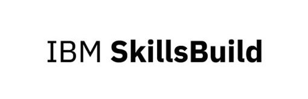

Web App for IBM SkillsBuild
Objectives
- Promote IBM SkillsBuild: Encourage students to utilize IBM SkillsBuild for advancing their knowledge in various technological domains.
- Interactive Learning: Develop an engaging web application that motivates students through gamification.
- Digital Credentials: Enable students to earn digital badges and certificates, which can be shared on social media platforms like LinkedIn, showcasing their progress and skills.
Key Features
- Secure Login: Students can securely log in to their accounts to access personalized features.
- Course Access: Direct links to IBM SkillsBuild courses and resources for easy navigation.
- Activity Tracking: Maintain a history of completed courses with simulated integration to IBM SkillsBuild.
- Badge Earning System: Students earn badges as they complete more courses, showcasing their progress.
- Gamification Elements: Incorporate creative gamification techniques such as:
- Competing with friends
- Leaderboards
- Progress visualization (e.g., a character moving around a board as courses are completed)
By leveraging these features, the IBM SkillsBuild interactive web application aims to create a dynamic and engaging learning environment that supports students in their educational and professional journeys.